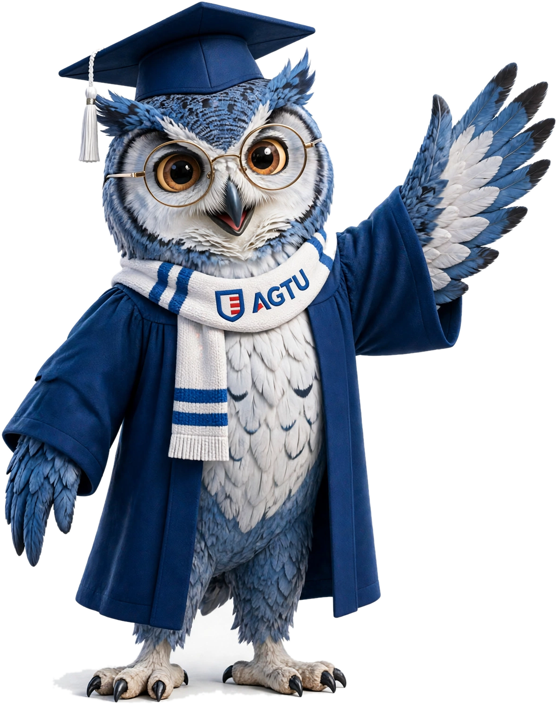

AGTU Tendênciasedição nº 01
A IA ganhou mãos.
O Muse, novo agente da Meta, manda e-mail, preenche formulário e faz compra sozinho. O que isso muda no trabalho de quem decide?
Muda mais do que parece. Arrasta →

Muse, your personal AI agentMeta, setembro de 2026
Esta coruja é o avatar do agente que a gente criou no Muse.
AGTU Tendênciasedição nº 01
o que mudou
Chatbot responde. Agente entrega.
2023, o chatbotVocê pergunta, ele responde. Você copia, cola e faz o resto.
2026, o agenteVocê diz o objetivo. Ele planeja, usa os seus apps e volta com a tarefa feita.
Exemplo da própria Meta: achou a autorização da escola no e-mail, preencheu e só pediu o “ok”.
Fonte: Meta Newsroom e App Store (Muse from Meta), set/2026.
2/5
AGTU Tendênciasedição nº 01
na prática
Onde um agente entra na sua semana
Depois da reuniãoO resumo vai para todos, a próxima reunião entra na agenda e ninguém fica esperando o seu e-mail.
Nas contasTrês meses de extrato cruzados em segundos, com as assinaturas esquecidas no topo da lista.
Nas metasUm objetivo vira plano, com etapas, prazos e lembrete na hora certa.
Com base nas funções anunciadas pela Meta. Por enquanto, o Muse funciona só nos EUA.
3/5
AGTU Tendênciasedição nº 01
o que continua com você
Antes de delegar, quem lidera decide três coisas
O que ele pode ver e o que pode fazerLer a agenda é uma coisa. Mandar e-mail em seu nome é outra.
Quando ele precisa do seu simO Muse deixa escolher: só desta vez, só nesta tarefa ou sempre.
Quem responde se der erradoO e-mail sai com o seu nome. A conta também.
Delegar para IA virou competência de gestão.
Fonte: Central de Ajuda da Meta, permissões do Muse.
4/5

AGTU Tendênciasedição nº 01
Quer usar IA assim no seu trabalho?
isso se aprende noMestrado em Inteligência Artificial da AGTU
Online e em português. Universidade americana, licenciada na Flórida.
Comente AGENTE e a gente te manda a grade do curso no direct.
Salve para a próxima reunião sobre IA.
A coruja é o avatar que criamos no Muse, não o mascote da AGTU.
